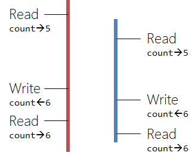

<!doctype html>
<html lang="sv">
<meta charset="utf-8" />
<title>Kmom06 | Kursen oopython</title>

<!-- Mithril HTML Slideshow styles -->
<link href="../css/mithril-slideshow.css" rel="stylesheet" />

<!-- Code formatting using highlight.js -->
<link rel="stylesheet" href="../css/default.css">
<link rel="stylesheet" href="../css/tomorrow.css">
<script src="../js/highlight.pack.js"></script>

<!-- Text formatting using Markdown through showdown.js -->
<script src="../js/showdown.min.js"></script>


<!-- Here comes the slides in order -->
<script data-role="slide" data-markdown type="text/html">
# OOPython
## Saker kring programmering
### Andreas arnesson, dbwebb
</script>


<script data-role="slide" data-markdown type="text/html">
# Agenda

* Refaktorera kod

* Anti patterns

* Fördelar och nackdelar med OO

* Skolan vs Arbetslivet

</script>

<script data-role="slide" data-markdown type="text/html">
# Refaktorering av kod

* Förbättra utan att lägga till

</script>

<script data-role="slide" data-markdown type="text/html">

# Smutsig kod

* Det blir inte alltid som man tänker sig.

* Genvägar

</script>

<script data-role="slide" data-markdown type="text/html">
# Teknisk skuld

* Ett lån på banken

* Big O

* Varför?

</script>


<script data-role="slide" data-markdown type="text/html">
# Vad är ren kod?

* Lättläst

* Simpel

* DRY

* Inte onödig kod

</script>


<script data-role="slide" data-markdown type="text/html">
# Hur refaktorerar vi?

* Koden ska bli renare

* Ingen ny funktionalitet

* Alla existerande tester är gröna

</script>


<script data-role="slide" data-markdown type="text/html">
# Anti-patterns

* Användandet av arv

* Premature Optimization

* Analysis paralysis

* Magiska värden
</script>


<script data-role="slide" data-markdown type="text/html">
<pre data-code="c100"></pre>
</script>
<script id="c100" data-role="code" data-language="python" type="text/html">
For i in range(4):
    For j in range(1,14):
        Card(i, j)
</script>
</script>


<script data-role="slide" data-markdown type="text/html">
<pre data-code="c200"></pre>
</script>
<script id="c200" data-role="code" data-language="python" type="text/html">
NUMBER_OF_SUITS  =  4
CARDVALUES_MIN = 1
CARDVALUES_UPPTO = 14
For i in range(NUMBER_OF_SUITS ):
    For j in range(CARDVALUES_MIN ,CARDVALUES_UPPTO):
        Card(i, j)
</script>
</script>

<script data-role="slide" data-markdown type="text/html">
# Anti-patterns...

* God class

* Inte skapa nya klasser

* Spök klasser


</script>

<script data-role="slide" data-markdown type="text/html">
# Fördelar med OO

* States

* Lättläst

* Modulär

* Lätt att underhålla


</script>

<script data-role="slide" data-markdown type="text/html">
# nackdelar med OO

* States


* Brant inlärningskurva

* Mer kod

* Långsammare


</script>

<script data-role="slide" data-markdown type="text/html">
# Skolan vs Arbetslivet

“Programmering i skolan förbereder dig för arbetslivet lika mycket som idrottsträning förbereder en arme för krig”.

</script>


<script data-role="slide" data-markdown type="text/html">
# Före ni programmerar

Skolan
* Små konkreta problem

Arbetslivet
* Analyser, designa och besluta

</script>

<script data-role="slide" data-markdown type="text/html">
# Under tiden som ni programmerar

Skolan
* Gör ett fungerande program

Arbetslivet
* Andra människor
* Gammal kod
* "ilities"
* Inte bara "Happy path"
* Förändring

</script>

<script data-role="slide" data-markdown type="text/html">
# Efter ni har programmerat

Skolan
* Vänta på godkänt

Arbetslivet
* Hur vet du att ud är klar?
* Underhållning
* Bugfixes

</script>

<script data-role="slide" data-markdown type="text/html">
# Eller?

* 40%-60% kodning
* Påverka med val av jobb


<script data-role="slide" data-markdown type="text/html">
# Avslutningsvis

* Frågor på det?

</script>


<script data-role="slide" data-markdown type="text/html">
<!-- empty slide by intention -->
</script>


<!-- include essential js-script -->
<script src="../js/mithril.min.js"></script>
<script src="../js/mithril-slideshow.js"></script>
